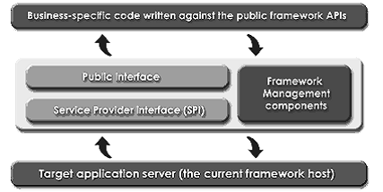

一直以来我们都说Struts 是一个Web Framework。那么让我么先来看看什么是Framework。Framework 概念并不是很新了，伴随着软件开发的发展，在多层的软件开发项目中，可重用、易扩展的，而且是经过良好测试的软件组件，越来越为人们所青睐。这意味着人们可以将充裕的时间用来分析、构建业务逻辑的应用上，而非繁杂的代码工程。于是人们将相同类型问题的解决途径进行抽象，抽取成一个应用框架。这也就是我们所说的Framework。Framework 的体系提供了一套明确机制，从而让开发人员很容易的扩展和控制整个Framework 开发上的结构。通常， Framework 的结构中都有一个“命令和控制” 组件（"command and control" component）——Framework Factory and Manager。Framework的组成如下图1：
Framework 体系通过基于请求响应（Request-Response）模式的应用Framework，基本上有如下几个表。

Framework的组成图1
现逻辑结构组成。
控制器（Controller）——控制整个Framework 中各个组件的协调工作。
业务逻辑层（Business Logic）——对Framwork 本身来说，这里仅仅只是概念和几个提够服务的基础组件，真正的实现与客户的业务逻辑接轨，还需要开发人员在Framework 上再次扩展。
数据逻辑层（Data Logic）——绝大应用系统都需要涉及到数据交互，这一层次主要包括了数据逻辑和数据访问接口。对于数据逻辑来说，如果你了解数据建模（Data Modeling）可能就很容易理解。